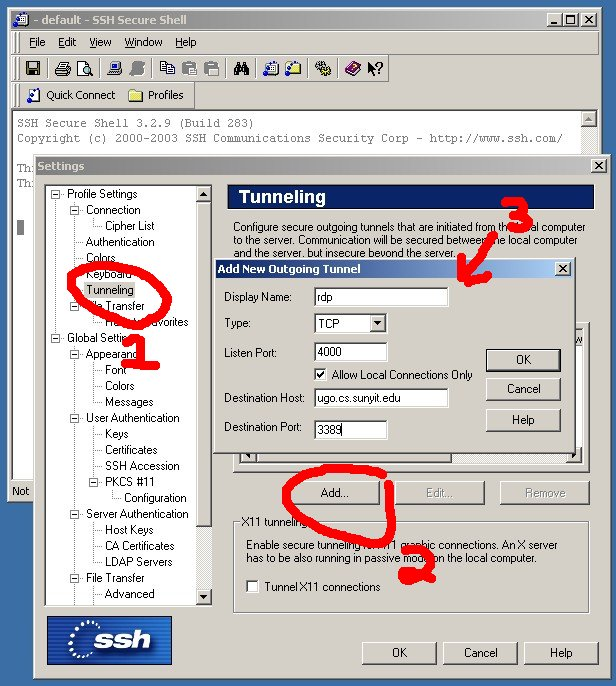
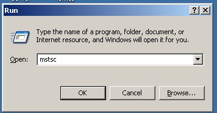
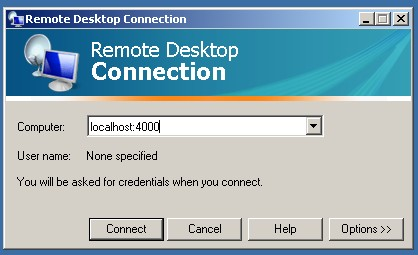

Open the SSH client, Click on Edit / Settings
Then:

Click on the two OK boxes.
Connect to fang or any other DogNET machine as normal
Click Start / Run and type in mstsc to start the remote desktop client

Connect to localhost on port 4000. The connection will be tunneled through ssh to ugo.
